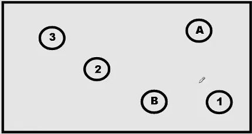

<!DOCTYPE html>
<html>
<head>
    <link rel="stylesheet" href="jspsych/css/jspsych.css">

    <!-- jsPsych library -->
    <script src="jspsych/jspsych.js"></script>

    <!-- jsPsych plugins actually used by this experiment -->
    <script src="jspsych/plugins/jspsych-fullscreen.js"></script>
    <script src="jspsych/plugins/jspsych-instructions_modified.js"></script>
    <script src="jspsych/plugins/jspsych-psychophysics_modified.js"></script>
    <script src="jspsych/plugins/jspsych-html-keyboard-response.js"></script>

    <!-- For local saving of the data in CSV format -->
    <script src="utils.js"></script>
</head>
<body></body>
<script>

// ---------------------------------------------------------------
// Prolific tracking: pull PROLIFIC_PID / STUDY_ID / SESSION_ID out
// of the URL so they get attached to every row of data.
// Prolific appends these automatically to the link you give
// participants, e.g. ...?PROLIFIC_PID=abc123&STUDY_ID=xyz&SESSION_ID=999
// ---------------------------------------------------------------
var urlParams = new URLSearchParams(window.location.search);
var prolific_pid = urlParams.get('PROLIFIC_PID') || 'unknown';
var study_id = urlParams.get('STUDY_ID') || 'unknown';
var session_id = urlParams.get('SESSION_ID') || 'unknown';

// ---------------------------------------------------------------
// Where the data goes and where participants go next.
// ---------------------------------------------------------------
const DATAPIPE_EXPERIMENT_ID = "PGH139IF9EXO";
const CORSI_REDIRECT_URL = "Corsi.html";

// Mouse coordinates used by the drawing/tracking logic in the
// psychophysics plugin while the participant traces the trail
let x = 0;
let y = 0;
let isDrawing = false;

// Prevent space bar from scrolling the page during the experiment
window.onkeydown = function(e) {
    return e.keyCode !== 32;
};

// Disable page scrolling entirely
function disableScroll() {
    let scrollTop = window.pageYOffset || document.documentElement.scrollTop;
    let scrollLeft = window.pageXOffset || document.documentElement.scrollLeft;
    window.onscroll = function() {
        window.scrollTo(scrollLeft, scrollTop);
    };
}
disableScroll();

// Shuffle using Fisher-Yates
function shuffle(array) {
    var currentIndex = array.length, temporaryValue, randomIndex;
    while (0 !== currentIndex) {
        randomIndex = Math.floor(Math.random() * currentIndex);
        currentIndex -= 1;
        temporaryValue = array[currentIndex];
        array[currentIndex] = array[randomIndex];
        array[randomIndex] = temporaryValue;
    }
    return array;
}

// Presentation delay before each stimulus image is drawn
const delayInMilliseconds = 1000;

// All 40 stimulus images (2 counterbalanced conditions x 20 trials each,
// alternating TMT-A [numbers only] and TMT-B [numbers + letters] boards)
const images = [
    "./stimuli/cond1/stim_1_A.jpg", "./stimuli/cond1/stim_2_B.jpg", "./stimuli/cond1/stim_3_A.jpg", "./stimuli/cond1/stim_4_B.jpg", "./stimuli/cond1/stim_5_A.jpg",
    "./stimuli/cond1/stim_6_B.jpg", "./stimuli/cond1/stim_7_A.jpg", "./stimuli/cond1/stim_8_B.jpg", "./stimuli/cond1/stim_9_A.jpg", "./stimuli/cond1/stim_10_B.jpg",
    "./stimuli/cond1/stim_11_A.jpg", "./stimuli/cond1/stim_12_B.jpg", "./stimuli/cond1/stim_13_A.jpg", "./stimuli/cond1/stim_14_B.jpg", "./stimuli/cond1/stim_15_A.jpg",
    "./stimuli/cond1/stim_16_B.jpg", "./stimuli/cond1/stim_17_A.jpg", "./stimuli/cond1/stim_18_B.jpg", "./stimuli/cond1/stim_19_A.jpg", "./stimuli/cond1/stim_20_B.jpg",
    "./stimuli/cond2/stim_2_A.jpg", "./stimuli/cond2/stim_1_B.jpg", "./stimuli/cond2/stim_4_A.jpg", "./stimuli/cond2/stim_3_B.jpg", "./stimuli/cond2/stim_6_A.jpg",
    "./stimuli/cond2/stim_5_B.jpg", "./stimuli/cond2/stim_8_A.jpg", "./stimuli/cond2/stim_7_B.jpg", "./stimuli/cond2/stim_10_A.jpg", "./stimuli/cond2/stim_9_B.jpg",
    "./stimuli/cond2/stim_12_A.jpg", "./stimuli/cond2/stim_11_B.jpg", "./stimuli/cond2/stim_14_A.jpg", "./stimuli/cond2/stim_13_B.jpg", "./stimuli/cond2/stim_16_A.jpg",
    "./stimuli/cond2/stim_15_B.jpg", "./stimuli/cond2/stim_18_A.jpg", "./stimuli/cond2/stim_17_B.jpg", "./stimuli/cond2/stim_20_A.jpg", "./stimuli/cond2/stim_19_B.jpg"
];

// Two counterbalanced conditions with 20 stimuli each
const images_condition_1 = images.slice(0, 20);
const images_condition_2 = images.slice(20, 40);

// Split each condition into its A-type and B-type trials
const images_condition_1_A = [];
const images_condition_1_B = [];
const images_condition_2_A = [];
const images_condition_2_B = [];

for (let idx = 0; idx < images_condition_1.length; idx++) {
    (idx % 2 === 0 ? images_condition_1_A : images_condition_1_B).push(images_condition_1[idx]);
}
for (let idx = 0; idx < images_condition_2.length; idx++) {
    (idx % 2 === 0 ? images_condition_2_A : images_condition_2_B).push(images_condition_2[idx]);
}

// Shuffle each sub-group independently
const images_condition_1_A_shuffled = shuffle(images_condition_1_A);
const images_condition_1_B_shuffled = shuffle(images_condition_1_B);
const images_condition_2_A_shuffled = shuffle(images_condition_2_A);
const images_condition_2_B_shuffled = shuffle(images_condition_2_B);

// Re-interleave each condition so A and B trials alternate
const final_images_condition_1 = [];
const final_images_condition_2 = [];

for (let idx = 0; idx < images_condition_1_A_shuffled.length; idx++) {
    final_images_condition_1.push(images_condition_1_A_shuffled[idx]);
    final_images_condition_1.push(images_condition_1_B_shuffled[idx]);
}
for (let idx = 0; idx < images_condition_2_A_shuffled.length; idx++) {
    final_images_condition_2.push(images_condition_2_A_shuffled[idx]);
    final_images_condition_2.push(images_condition_2_B_shuffled[idx]);
}

// Randomly assign the participant to condition 1 or condition 2
const random_number = Math.random();
let timelineVariables = [];

if (random_number > 0.5) {
    for (const img of final_images_condition_1) {
        timelineVariables.push({ fileName: img });
    }
} else {
    for (const img of final_images_condition_2) {
        timelineVariables.push({ fileName: img });
    }
}

// ** Experiment blocks **

// Draws each stimulus board image centered on the canvas
var showed_image = {
    obj_type: 'image',
    file: jsPsych.timelineVariable('fileName'),
    startX: 'center',
    startY: 'center',
    drawFunc: function (stimulus, canvas, context) {
        setTimeout(function () {
            context.drawImage(
                stimulus.img, 0, 0, stimulus.img.width, stimulus.img.height,
                document.getElementById('myCanvas').width / 2 - 512,
                document.getElementById('myCanvas').height / 2 - 384,
                stimulus.img.width, stimulus.img.height
            );
        }, delayInMilliseconds);
    }
};

// Fixation cross shown before each trial; also arms the mouse-drawing listener
var extra_cross = {
    obj_type: 'cross',
    line_length: 20,
    line_width: 4,
    drawFunc: function (stimulus, canvas, context) {
        canvas.addEventListener('mousedown', e => {
            x = e.offsetX;
            y = e.offsetY;
            isDrawing = true;
        });

        context.beginPath();
        context.lineWidth = stimulus.line_width;
        context.lineJoin = stimulus.lineJoin;
        context.miterLimit = stimulus.miterLimit;
        context.strokeStyle = 'white';
        const x1 = stimulus.currentX;
        const y1 = stimulus.currentY - stimulus.line_length / 2;
        const x2 = stimulus.currentX;
        const y2 = stimulus.currentY + stimulus.line_length / 2;
        context.moveTo(x1, y1);
        context.lineTo(x2, y2);
        const x3 = stimulus.currentX - stimulus.line_length / 2;
        const y3 = stimulus.currentY;
        const x4 = stimulus.currentX + stimulus.line_length / 2;
        const y4 = stimulus.currentY;
        context.moveTo(x3, y3);
        context.lineTo(x4, y4);
        context.stroke();
    }
};

var fullscreenTrial = {
    type: 'fullscreen',
    fullscreen_mode: true,
    message: '<p>The experiment will go fullscreen when you press the button below.</p><br>',
    button_label: 'Continue to fullscreen'
};

// Instructions for the experiment
var explanation = {
    type: 'instructions',
    pages: [
        `<p style='font-size:150%;color:black'>This experiment consists of two types of trials, each with a fixed time limit to complete it.</p>`,

        `<br><br>
         <p style='font-size:130%;color:black'>
         In the first type of trial, you will see a series of numbers from 1 to 20, each circled.<br>
         Your goal is to connect the circles in increasing order with one continuous line,<br>
         trying not to let the lines cross.<br><br>
         AT THE START OF EACH TRIAL YOU WILL SEE A CROSS IN THE CENTER OF THE SCREEN.<br>
         WHEN IT DISAPPEARS AND YOU SEE THE CIRCLES, PRESS AND HOLD THE LEFT MOUSE BUTTON<br>
         (OR YOUR TRACKPAD) UNTIL YOU FINISH.<br>
         Don't lift your finger off the button unless you've finished the trial, or the time limit has run out.</p>`,

        `<br><br>
         <p style='font-size:150%;color:black'>
         The other type of trial consists of a series of numbers from 1 to 10 and letters from A to J.<br>
         Your goal is to connect the circles in alternating order with one continuous line (example: 1-A-2-B-3-C, etc).<br><br>
         Try to complete each trial as accurately and quickly as possible.<br><br>
         The two trial types will always alternate.<br><br>
         Press Next to begin the experiment.<br><br>
         Good luck, and thank you for participating!</p>`
    ],
    show_clickable_nav: true,
    show_page_number: true,
    button_label_previous: 'Previous',
    button_label_next: 'Next',
    page_label: 'Page'
};

// TMT experimental trials
var trial = {
    timeline: [
        {
            type: 'psychophysics',
            stimuli: [extra_cross, showed_image],
            response_type: 'mouse',
            background_color: 'gray',
            trial_duration: 61000, // trial ends automatically after this many ms
            data: { file_name: jsPsych.timelineVariable('fileName') }
        }
    ],
    timeline_variables: timelineVariables,
    repetitions: 1,
    randomize_order: false // already randomized/interleaved manually above
};

var greetings = {
    type: "html-keyboard-response",
    stimulus: '<p style="font-size: 40px;">The task is finished.<br><br>Thank you for participating!<br><br>Press any key to submit your data and continue.</p>'
};

jsPsych.init({
    timeline: [fullscreenTrial, explanation, trial, greetings],

    on_interaction_data_update: function (data) {
        var trial = jsPsych.currentTrial();
        trial.data.screen_focus = data.event;
    },

    // Image data should be preloaded
    preload_images: images,

    // Attach the Prolific identifiers to every row of data
    on_finish: function () {

        jsPsych.data.addProperties({
            prolific_pid: prolific_pid,
            study_id: study_id,
            session_id: session_id
        });

        let CSV = jsPsych.data.get().csv();

        function goToCorsi() {
            var separator = CORSI_REDIRECT_URL.indexOf("?") === -1 ? "?" : "&";
            window.location.href = CORSI_REDIRECT_URL + separator +
                "PROLIFIC_PID=" + encodeURIComponent(prolific_pid) +
                "&STUDY_ID=" + encodeURIComponent(study_id) +
                "&SESSION_ID=" + encodeURIComponent(session_id);
        }

        // Only save data when a real Prolific ID is present. Without one,
        // someone opened this page directly (not via Prolific/Qualtrics),
        // so skip creating a junk row in DataPipe/Google Drive and just
        // send them on to Corsi.
        if (prolific_pid === "unknown") {
            console.warn("No PROLIFIC_PID found in URL — skipping DataPipe save.");
            goToCorsi();
        } else {
            fetch("https://pipe.jspsych.org/api/data/", {
                method: "POST",
                headers: { "Content-Type": "application/json" },
                body: JSON.stringify({
                    experimentID: DATAPIPE_EXPERIMENT_ID,
                    filename: `${prolific_pid}_${Date.now()}.csv`,
                    data: CSV
                })
            })
            .then(() => goToCorsi())
            .catch((error) => {
                console.error("DataPipe save failed:", error);
                goToCorsi();
            });
        }
    },

    // Minimum browser size values
    exclusions: {
        min_width: 800,
        min_height: 600
    }
});
</script>
</html>
